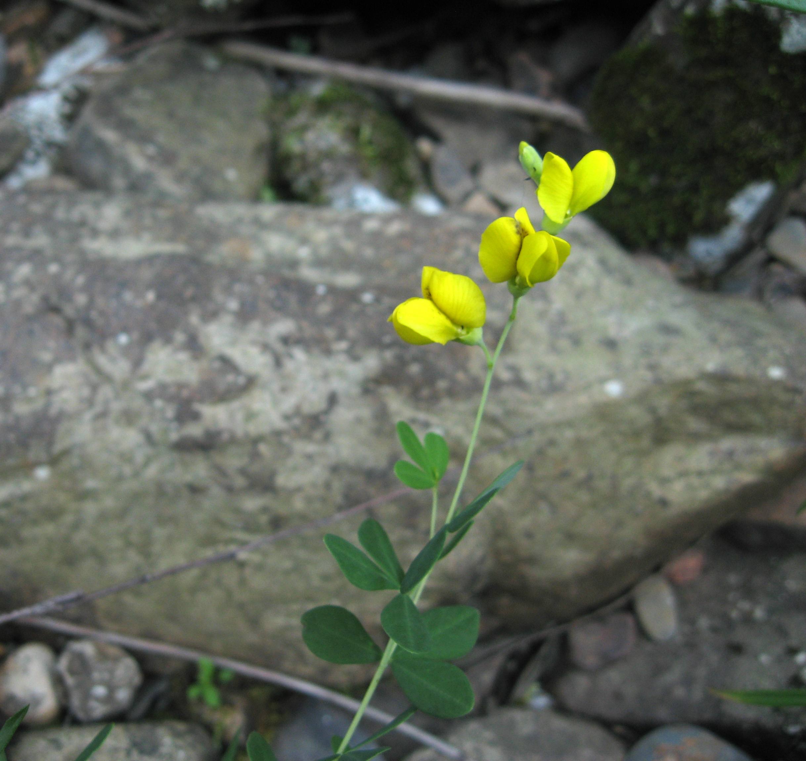
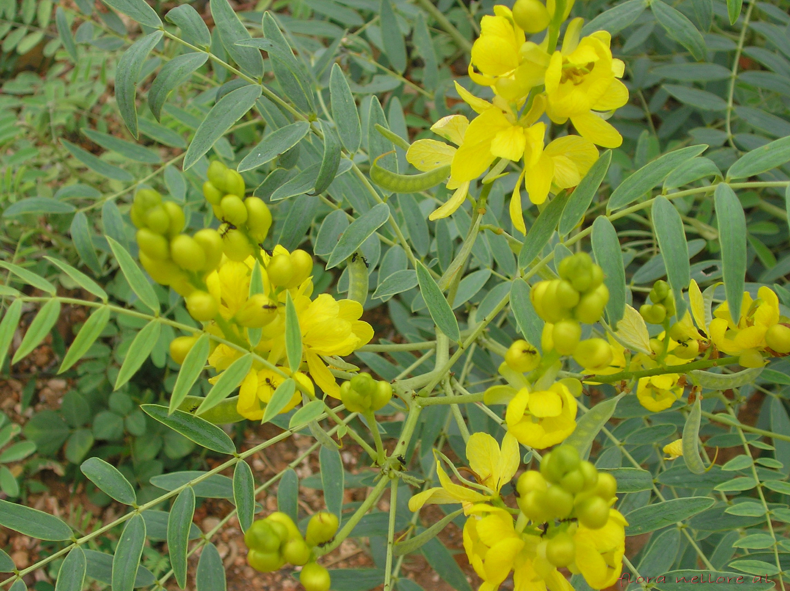

Fabaceae
legume/pea/bean family
Lathyrus nissolia (grass vetchling) from Wikimedia Commons by Sannse - Own work, CC BY-SA 3.0 |
Acacia baileyana (golden mimosa) from Wikimedia Commons by Daiju Azuma - Own work, CC BY-SA 2.5 |
Gymnocladus dioicus (Kentucky coffeebean) from Wikimedia Commons by Hardyplants - Own work, Public Domain |
 Lupinus texensis (Texas bluebonnet) from Wikimedia Commons by Loadmaster (David R. Tribble) - Own work, CC BY-SA 3.0 |
{kind=link}
{kind=link}
{kind=link}
botanical characteristics
Botany in a Day, p. 79-85 | "Fabaceae", Wikipedia
- overall traits
- a wide variety of growth forms, including trees, shrubs, herbaceous plants, and even vines or lianas
- leaves are usually alternate and compound (pinnate, bipinnate, trifoliate, palmately compound)
- leaf margins are entire or, occasionally, serrate
- flowers are usually showy to attract pollinators
- distintive flower shapes for major subfamilies
- ovary most typically develops into a legume: a simple dry fruit that usually dehisces (opens along a seam) on two sides
- Caesalpinioideae (casesalpinia/senna/bird-of-paradise) subfamily
- mostly trees and shrubs (rarely herbs) with showy, slightly irregular flowers
- leaves may be simple, pinnate, or bipinnate
- 5 separate sepals and 5 petals with one petal enclosed inside the others
- usually 10 (sometimes fewer) stamens
- ovary positioned superior, consisting of a single carpel, which matures as a typical pea pod
- Mimosoid (mimosa) clade
- previously the Mimosoideae subfamily
- leaves are alternate and distinctively bipinnate
- stamens are long and brightly colored
- dense clusters of small flowers with the stamens radiating out
- Faboideae (pea) subfamily
- flowers form distinctive banner, wings, and keel
- banner is a single petal wiht two lobes (looks like two fused petals), below forms two wings, below two more petals are fused and form the keel
- ovary is positioned perigynous (partially inferior) and consists of a single carpel, which matures as a pea pod
- Thermopsideae (golden pea) tribe
- trifoliate (three-parted) leaves
- often has stipules (leaf-like growths at the base of leaf stems)
- Hedysareae (hedysarum) tribe
- trifoliate or pinnate leaves
- no tendrils
- pods on most species are deeply constricted between the seeds and tend to break transversely (crosswise instead of lengthwise)
- Genisteae (broom) tribe
- mostly shrubs, some with spines
- leaves can be simple, trifoliate, or palmately compound, but not pinnate
- Galegeae (licorice) tribe
- most have pinnately divided leaves
- no tendrils or deeply constricted pods
- Trifolieae (clover) tribe
- trifoliate leaves
- often smaller flowers that are clustered together
- Loteae (trefoil) tribe
- trifoliate or pinnate leaves
- sometimes has stipules
- Fabeae (pea) tribe
- pinnate leaves with tentrils
- Phaseoleae (bean) tribe
- twining plants that climb by growing vine-like stems around poles and other objects
- usually trifoliate leaves
distribution
"Fabaceae", Wikipedia
- about 765 genera and nearly 20000 known species worldwide
- essentially worldwide distribution, being found everywhere except Antarctica and the high Arctic
- the trees are often found in tropical regions, while the herbaceous plants and shrubs are predominant outside the tropics
ecological roles
"Fabaceae", Wikipedia
- many Fabaceae form symbiotic relationships with bacteria in their roots to fix nitrogen in soil
- bacteria hosted in structers called root nodules
- these bacteria, called rhizobia, have the ability to take nitrogen gas (N2) out of the air and convert it to a form of nitrogen that is usable to the host plant (NO3− or NH3)
- many species have leaves with structures that attract ants which protect the plant from herbivore insects
- Fabaceae are typically entomophilous plants (pollinated by insects), and the flowers are usually showy to attract pollinators
- a large number of species within many genera of leguminous plants produce chemicals that inhibit mitochondrial respiration, which is especially toxic to nerve cells and represents a very general toxic defense mechanism
common pharmacological constituents
"Angiosperm families - Leguminosae-Caesalpinioideae Kunth", DELTA
- sugars transported as sucrose (in all 15 genera sampled); cyanogenic, or not cyanogenic (?); cynogenic constituents tyrosine-derived, or phenylalanine-derived, or of Hegnauer’s ‘Group C’, or leucine-derived (?); alkaloids present (commonly), or absent (?); arbutin present, or absent; iridoids not detected; proanthocyanidins present, or absent (?); when present, cyanidin, or delphinidin, or cyanidin and delphinidin (?); flavonols present (mostly), or absent (?); kaempferol and quercetin, or quercetin and myricetin, or kaempferol, quercetin, and myricetin (?); ellagic acid consistently absent; aluminium accumulation not found; sieve-tube plastids P-type; type IV (subtype (b) in 18 genera)
"Angiosperm families - Leguminosae-Mimosoideae Kunth", DELTA
- sugars transported as sucrose (in the 5 genera sampled); not cyanogenic; alkaloids present (commonly), or absent; arbutin present, or absent (?); iridoids not detected; proanthocyanidins present, or absent (?); when present, cyanidin, or delphinidin, or cyanidin and delphinidin; flavonols present (mostly), or absent (?); kaempferol and quercetin, or quercetin and myricetin, or kaempferol, quercetin, and myricetin (?); ellagic acid consistently absent; aluminium accumulation not found; sieve-tube plastids P-type (12 genera); type IV (subtype (a) in 12 genera)
"Angiosperm families - Leguminosae-Papilionoideae DC.", DELTA
- sugars transported as sucrose (in the 20 genera sampled); cyanogenic (rarely), or not cyanogenic (mostly); cynogenic constituents tyrosine-derived, or phenylalanine-derived, or of Hegnauer’s ‘Group C’, or leucine-derived; alkaloids present (commonly), or absent; arbutin present, or absent; iridoids not detected; proanthocyanidins present, or absent; when present, cyanidin, or delphinidin, or cyanidin and delphinidin; flavonols present (mostly), or absent; kaempferol and quercetin, or quercetin and myricetin, or kaempferol, quercetin, and myricetin; ellagic acid consistently absent; aluminium accumulation not found; sieve-tube plastids P-type (93 genera), or S-type (13 genera); when P-type type IV (seemingly always subtype (b))
patterns in medicinal actions
- nutritive: vast importance as foods
- alterative, lymphatic, purgative actions
- purifying/expeling action makes space for replenishing minerals/vitamins
- calming/stabilizing effect on the nervous system
- hormonal action affecting various parts of the endocrine system
traditional/cultural uses
"Fabaceae", Wikipedia
- the history of legumes is tied in closely with that of human civilization, appearing early in Asia, the Americas (the common bean, several varieties) and Europe (broad beans) by 6000 BCE, where they became a staple, essential as a source of protein
- legumes are commonly used as natural fertilizers due to their nitrogen fixing
- many alfalfas, clovers, vetches are sown in pasture and grazed by livestock; other forage legumes such as Leucaena or Albizia are woody shrub or tree species that are either broken down by livestock or regularly cut by humans to provide fodder
- grain legumes are cultivated for their seeds, and are also called pulses
- bloom legume species include species such as lupin, which are farmed commercially for their blooms, and thus are popular in gardens worldwide
- various legume species are farmed for timber production worldwide, including numerous Acacia species, Dalbergia species, and Castanospermum australe
- many Fabaceae species (incl. alfalfa, white clovers, sweet clovers) are important sources of pollen and nectar for bees, including for honey production in the beekeeping industry
- many species produce natural gums that are widely used in the pharmaceutical, cosmetic, food, and textile industries and have medicinal properties (e.g., antitussive, anti-inflammatory, etc.)
- most well known gums are tragacanth (Astragalus gummifer), gum arabic (Acacia senegal), and guar gum (Cyamopsis tetragonoloba)
- several species of Fabaceae are used to produce dyes, including reds, purples, yellows, and indigos
warnings
Botany in a Day, p. 79-85
- pea family plants range from edible to mildly poisonous
- several species contain toxic alkaloids and toxic amino acids
- excessive consumption of some species can cause paralysis or death
extra information
prominent genera
Caesalpinioideae
- Caesalpinia (birds-of-paradise)
- Cassia (cassias)
- Ceratonia (incl. carob)
- Gymnocladus (Kentucky coffeebean)
- Parkinsonia (palos verdes)
- Senna (sennas)
- Tamarindus (tamarinds)
Caesalpinioideae - Mimosoid clade
- Acacia (acacias, mimosas)
- Albizia (silk plants, mimosas)
- Desmanthus (bundleflowers)
- Mimosa (sensitive plants, mimosas)
Faboideae - Thermopsideae
- Baptisia (wild indigos)
- Thermoposis (golden peas, cowslips)
Faboideae - Hedysareae
- Coronilla (crown vetches)
- Hedysarum (sweetvetches)
Faboideae - Genisteae
- Cytisus (scotch brooms)
- Genista (brooms)
- Lupinus (lupines, bluebonnets)
- Spartium (spanish broom)
Faboideae - Galegeae
- Amorpha (false indigos)
- Astragalus (locoweeds, milk vetches, ground plums)
- Galega (goat's rues)
- Glycyrrhiza (licorices)
- Psoralea (breadroots)
- Robinia (locust trees)
Faboideae - Indigofereae
- Cyamopsis (incl. guar)
- Indigofera (indigos)
Faboideae - Trifolieae
- Medicago (alfalfas)
- Melilotus (sweet clovers)
- Trifolium (clovers)
- Trigonella (fenugreeks)
Faboideae - Loteae
- Lotus (bird's foot trefoils)
Faboideae - Fabeae
- Lathyrus (sweet peas)
- Lens (lentils)
- Pisum (garden peas)
- Vicia (vetches, incl. defunct genus Faba)
Faboideae - Cicereae
- Cicer (garbanzo beans)
Faboideae - Dalbergieae
- Arachis (peanuts)
- Dalbergia (incl. rosewood)
Faboideae - Phaseoleae
- Amphicarpaea (hog peanuts)
- Apios (ground nuts, hopnisses)
- Clitoria (incl. butterfly pea)
- Glycine (soybeans)
- Phaseolus (beans)
- Pueraria (kudzus)
- Vigna (cow peas, black-eyed peas)
Faboideae - Wisterieae
- Wisteria (wisterias)
plant highlights
see list of materia medica entries here
Medicago sativa
from Wikimedia Commons by fir0002flagstaffotos - Own work, GFDL 1.2 |
common names: alfalfa, lucerne en español: mielga, alfalfa, lucerna |
{kind=link}
description
"Medicago sativa", Wikipedia
- perennial forage legume with a deep root system
- small-seeded crop and has a slowly growing seedling, but after several months of establishment, it forms a tough 'crown' at the top of the root system
- the crown contains shoot buds that enable alfalfa to regrow many times after being grazed or harvested
- trifoliate leaves comprising round or elongated leaflets
- clusters of small purple flowers followed by fruits spiralled in two to three turns containing 10–20 seeds
distribution
"Medicago sativa", Wikipedia
- native to warmer temperate climates
- seems to have originated in south-central Asia, and was first cultivated in Central Asia
- has been cultivated as livestock fodder since at least the era of the ancient Greeks and Romans
medicinal/magical uses
The Modern Herbal Dispensatory, p. 171-2
- anticoagulant, bitter, galactagogue, mineralizer, nutritive, moistening, nourishing
- roots grow very deep to pick up minerals and water other plants can't reach; rich source of vitmins, minerals, trace minerals, and other nutrients
- trace minerals make it valuable for the pituitary gland
- mild alterative and blood purifier
- used for arthritis, poor apetite, general weakness, mineral deficiencies
- with peppermint for digestive troubles
The Yoga of Herbs, p. 99-100
- alterative, diuretic, antipyretic, hemostatic, astringent, cooling
- natural mineral and vitamin supplement
- combines well with other nutritive herbs like dandelion, horsetail, nettles, parsley
- not entire tonic/nutritive as it does not provide substance for building tissue
- action is cleansing and detoxifying
preparation methods
The Modern Herbal Dispensatory, p. 171-2
- fresh herb
- southern decoction
- tincture
- glycerite
- powder
warnings
The Modern Herbal Dispensatory, p. 171-2
- contains canavanine, a nonprotein amino acid that induces lupus-like symptoms in monkeys; contraindicated with lupus
Baptisia tinctoria
|  from Wikimedia Commons by Mason Brock (Masebrock) - Own work, Public Domain |
common names: wild indigo en español: añil basto |
{kind=link}
description
"Baptisia tinctoria", Wikipedia
- leaves are silver-green; each is divided into three leaflets
- flowers are yellow and grow in spikes
distribution
"Baptisia tinctoria", Wikipedia | "Wild Indigo – Baptisia tinctoria", United Plant Savers
- found throughout the eastern United States, west to Minnesota, and south to Florida
- rare in some parts of its range, it is protected by some state authorities
- in Kentucky it is threatened; in Maine it is considered endangered
- prefers dry meadow and open woodland environments
- listed as 'At Risk' by United Plant Savers
medicinal/magical uses
The Modern Herbal Dispensatory, p. 321
- bitter, cathartic (laxative), emetic, lymphatic, cooling, drying
- valuable remedy for serious infections causing toxicity and blood poisoning
- indicated for conditions where there is a discharge with foul odor
- works well for many bacterial infections, esp. with echinicea and poke
The New Age Herbalist, p. 77
- useful to treat sepsis and inflammation throughout the body
- used to counter inflammation of the lymph glands
- externally as an ointment for infected ulcers or sore/ulcerated nipples
preparation methods
The Modern Herbal Dispensatory, p. 321
- tincture
The New Age Herbalist, p. 77
- oil/salve
warnings
The Modern Herbal Dispensatory, p. 321 | The New Age Herbalist, p. 77
- strong purgative and emetic
- potentially toxic and should be used with caution
Senna alexandrina
|  from Wikimedia Commons by Lalithamba from India, CC BY 2.0 |
common names: Alexandrian senna en español: sen de Alejandría |
{kind=link}
description
"Senna alexandrina", Wikipedia
- a shrubby plant with a branched, pale-green erect stem and long spreading branches bearing four or five pairs of leaves
- pinnate leaves, margin is pointed and entire
- large, yellow flowers are in a raceme interior blossoms
- legume fruit are horned, broadly oblong, compressed and flat and contain about six seeds
distribution
"Senna alexandrina", Wikipedia
- grows natively in upper Egypt, especially in the Nubian region, and near Khartoum (Sudan), where it is cultivated commercially
- also grown in India and Somalia
- listed as 'Least Concern' on the IUCN Red List of Threatened Species
medicinal/magical uses
The Modern Herbal Dispensatory, p. 301-2
- purgative, cathartic, stimulant, laxative, drying, cooling
- very strong stimulant laxative, best used in formulation
The New Age Herbalist, p. 77
- sennosides in this plant are cathartic anthraquinones that irritate the bowel walls
- the bowel can become dependent on this action for evacuation
- can cause griping pains; best used with aromatic/digestive herbs like ginger, cloves, dill, fennel, coriander, orange peel, licorice
preparation methods
The Modern Herbal Dispensatory, p. 301-2
- infusion
- tincture
- powder
warnings
The Modern Herbal Dispensatory, p. 301-2 | The New Age Herbalist, p. 77
- should not be used with spastic constipation
- short-term use only
- can cause cramping and be habit-forming
Pueraria montana var. lobata
from Wikimedia Commons by Scott Ehardt - Own work, Public Domain |
common names: kudzu, arrowroot en español: kudzu |
{kind=link}
description
"Pueraria montana var. lobata", Wikipedia
- stoloniferous, semi-woody perennial climbing vine
- large tuberous roots that take up more than half of its biomass
- trifoliate compound leaves with 3 lobe-shaped leaflets that are supported underneath by a hairy stem
- flowers can form on the vines which have a distinct grape-like fragrance, pink and purple-colored petals
- capable of growing fruit that are clustered, seed-containing pods covered in distinct hair-like structures
distribution
"Pueraria montana var. lobata", Wikipedia
- native to East Asia, the Russian Far East, Southeast Asia, and the Pacific
- wide range of natural habitats including mixed forests, areas made up of shrubs, alongside the edges of bodies of water, as well as abandoned or disturbed areas
- highly invasive species that grows by smothering all other vegetation around it and climbing over seedlings and mature trees
- growth rate of 1 ft per day and can rapidly outgrow native vegetation, trees, and other plants by completely covering plants and hindering their access to a light source
- introduced to the United States in 1876 at the Philadelphia Centennial Exhibition
medicinal/magical uses
The Modern Herbal Dispensatory, p. 257
- astringent, demulcent, tonic, cooling, constricting
- flower has a history of use in TCM for counteracting alcoholism and relieving hangover
- roots used for neutralizing poisons and viral infections and for treating venous problems, including the headache, dizziness, and numbness caused by high blood pressure
- helpful for leaky gut syndrome, muscle aches, and neck and upper back pain
- used for diarrhea, dysentery, and increasing blood flow in patients with arteriosclerosis
preparation methods
The Modern Herbal Dispensatory, p. 301-2
- tincture
- powder
warnings
The Modern Herbal Dispensatory, p. 301-2
- no known warnings
sources
"Alfalfa" on Wikipedia. Retrieved 25 August 2025.
"Angiosperm families - Leguminosae-Caesalpinioideae Kunth" on DELTA - DEscription Language for TAxonomy. Retrieved 22 August 2025.
"Angiosperm families - Leguminosae-Mimosoideae Kunth" on DELTA - DEscription Language for TAxonomy. Retrieved 22 August 2025.
"Angiosperm families - Leguminosae-Papilionoideae DC." on DELTA - DEscription Language for TAxonomy. Retrieved 22 August 2025.
"Baptisia tinctoria" on Wikipedia. Retrieved 25 August 2025.
Easely, Thomas and Steven Horne. The Modern Herbal Dispensatory (2016)
Elpel, Thomas J. Botany in a Day: The Patterns Method of Plant Identification (2021)
"Fabaceae" on Wikipedia. Retrieved 22 August 2025.
Frawley, David and Vasant Lad. The Yoga of Herbs: An Ayurvedic Guide to Herbal Medicine (1986)
Goldberg Blackthorn, Samantha. Ace of Cups Herbal Medicine and Botanical Magic Herbal School (2024)
Mabey, Richard et al. The New Age Herbalist (1988)
"Pueraria montana var. lobata" on Wikipedia. Retrieved 25 August 2025.
"Senna alexandrina" on Wikipedia. Retrieved 25 August 2025.
"Wild Indigo – Baptisia tinctoria" on United Plant Savers. Retrieved 25 August 2025.